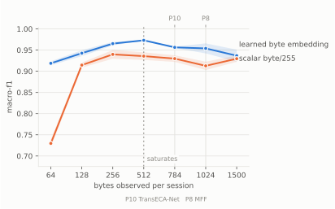
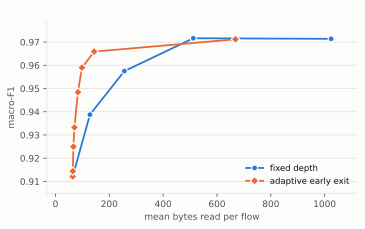
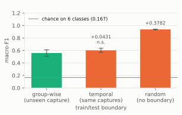

The Problem
Deep models classify encrypted traffic by reading a fixed prefix of each flow. That prefix is the observation budget. Across 12 recent studies it is 5 to 20 packets, or 784 to 1024 bytes, and it is never measured.
Flows are short: the median ISCX session is 274 bytes. A larger budget therefore mostly adds padding, so accuracy and padding are confounded by construction.
The Research Gap
Gap 1The budget is inherited, never measured against a curve.
Gap 2Aggregate accuracy conceals per-class failure.
Gap 3Corpora are called encrypted without measurement.
Gap 4Shortcut learning from identifier fields is rarely excluded.
Proposed Method
- Measure the budget. One preprocessing pass writes a 2048-byte store that is sliced per budget, so the budget is the only thing that varies.
- Gate the leakage. Three probes halt the pipeline unless anonymised identifier bytes are provably unlearnable.
- Decompose the padding gain into the learned byte embedding and the explicit PAD symbol, which the literature changes together.
- Exit early, causally. Head k provably sees only the first k bytes, so “bytes read” is a real cost.

Fig. 1. Only the dashed region repeats per budget,
so no sweep point differs in sessionization, deduplication or class balance.
Key Result
28%
of the byte cost, for the same macro-F1. The adaptive policy
matches the best fixed-depth head while reading 144 bytes per flow instead of
512 on USTC-TFC2016, and 116 bytes (23%) on ISCX VPN-nonVPN.
Results

Fig. 2. Macro-F1 saturates at 512 B.
Every budget used by the reviewed studies lies at or past it.

Fig. 3. The adaptive policy reaches the best fixed
head’s macro-F1 far to the left of it, at 144 B.

Fig. 4. Moving only the train/test boundary is worth
+0.3782 macro-F1, outweighing every architectural effect here.
512 B
saturation budget,
USTC-TFC2016
USTC-TFC2016
p < 10⁻⁴
reading more
is worse, McNemar
is worse, McNemar
+0.2408
padding gain is the
representation, not PAD
representation, not PAD
−0.0050
CNN vs transformer,
not separable
not separable
Conclusion
- Saturation is a property of where the discriminative bytes lie, not of the network reading them.
- Published budgets are 5 to 7 times larger than the measurements support, costing latency and memory for accuracy that is not there.
- Split policy outweighs every architectural effect measured here, so it must be stated for any cross-paper comparison to mean anything.
Code and paper
Scan for the full implementation, the result data behind every number here,
and the paper. Two public corpora, 385,351 sessions, 3 seeds, and
McNemar’s exact test on every headline claim.
Questions to i232548@isb.nu.edu.pk.